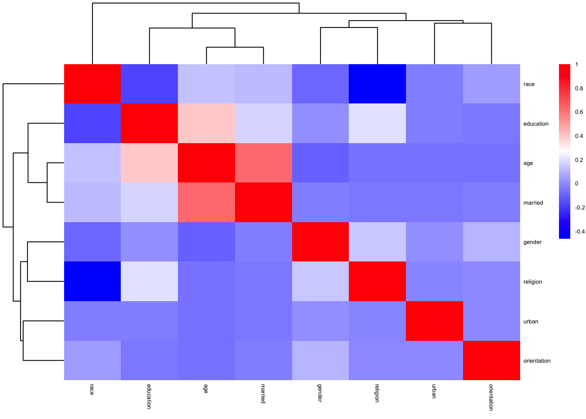
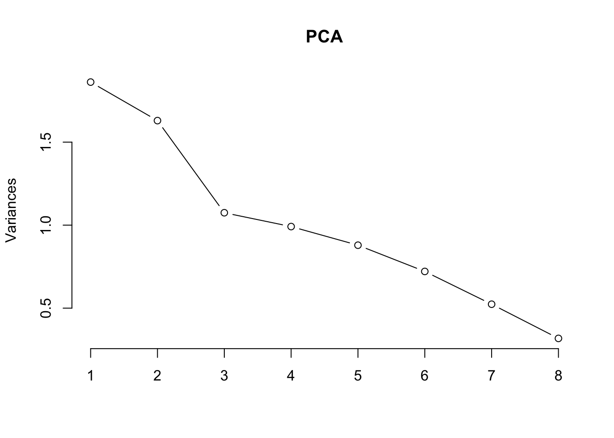

Statistical Analysis
# Select the columns you need and create a data frame
dass_heat1 <- dass %>%
dplyr::select(-matches('Q\\d+A')) %>%
dplyr::select(-country)
# Calculate the correlation matrix
r <- cor(dass_heat1,
method = "pearson",
use = "pairwise.complete.obs"
)
pheatmap(r,
show_colnames = TRUE,
show_rownames=TRUE,
fontsize=5,
color = colorRampPalette(c('#0000ff','#ffffff','#ff0000'))(100),
annotation_legend=TRUE,
border_color=NA,
scale="none",
cluster_rows = T,
cluster_cols = T
)
PCA = prcomp(dass_heat1, center = T, scale. = T)
PCA## Standard deviations (1, .., p=9):
## [1] 1.3510993 1.1795677 1.0400935 1.0101344 0.9402191 0.8981053 0.8848442
## [8] 0.8295568 0.7206010
##
## Rotation (n x k) = (9 x 9):
## PC1 PC2 PC3 PC4 PC5
## education 0.328888557 0.42293807 0.10419067 -0.14156354 0.08302232
## urban -0.046290001 -0.16195762 0.33061971 -0.82774988 0.18626082
## gender 0.209853677 -0.18944602 -0.49229349 -0.34091261 -0.72415215
## age 0.009865762 0.57169191 -0.10113923 -0.21290165 0.10732785
## religion 0.589226457 -0.06718548 0.04583374 -0.02681498 0.02743490
## orientation -0.003801148 -0.15366346 -0.72766040 -0.19074121 0.60229539
## race -0.552182007 0.14159841 -0.21688098 0.05524758 -0.08509763
## married -0.032537575 0.61709083 -0.15406411 -0.11656003 -0.17100745
## familysize 0.438620252 0.05651668 -0.15776372 0.28196027 0.15000343
## PC6 PC7 PC8 PC9
## education -0.651649160 0.07266300 -0.49495281 -0.01619399
## urban 0.242826300 0.26512051 -0.11142707 -0.02802019
## gender -0.001958253 -0.07957504 -0.16138218 0.06870794
## age 0.400734597 -0.66298480 -0.07135511 -0.02769268
## religion 0.016159975 -0.04117127 0.35228433 -0.72018427
## orientation -0.183097446 0.01284396 0.11008488 0.04396788
## race 0.062190063 0.21850149 -0.34965438 -0.66621691
## married 0.028804885 0.52189946 0.51250047 0.12533627
## familysize 0.563305923 0.39568698 -0.43627069 0.11537876summary(PCA)## Importance of components:
## PC1 PC2 PC3 PC4 PC5 PC6 PC7
## Standard deviation 1.3511 1.1796 1.0401 1.0101 0.94022 0.89811 0.88484
## Proportion of Variance 0.2028 0.1546 0.1202 0.1134 0.09822 0.08962 0.08699
## Cumulative Proportion 0.2028 0.3574 0.4776 0.5910 0.68923 0.77885 0.86584
## PC8 PC9
## Standard deviation 0.82956 0.7206
## Proportion of Variance 0.07646 0.0577
## Cumulative Proportion 0.94230 1.0000screeplot(PCA, type = 'line')
library(factoextra)## Welcome! Want to learn more? See two factoextra-related books at https://goo.gl/ve3WBafviz_pca_var(PCA, axes = c(1, 2), col.var = "contrib", gradient.cols = c("blue", "red"), repel = TRUE)
fviz_pca_var(PCA, axes = c(2, 3), col.var = "contrib", gradient.cols = c("blue", "red"),
repel = TRUE)
dass_heat2 <- dass %>%
mutate(
depression = Q3A + Q5A + Q10A + Q13A + Q16A + Q17A + Q21A + Q24A + Q26A + Q31A + Q34A + Q37A + Q38A + Q42A - 14,
anxiety = Q2A + Q4A + Q7A + Q9A + Q15A + Q19A + Q20A + Q23A + Q25A + Q28A + Q30A + Q36A + Q40A + Q41A - 14,
stress = Q1A + Q6A + Q8A + Q11A + Q12A + Q14A + Q18A + Q22A + Q27A + Q29A + Q32A + Q33A + Q35A + Q39A - 14
) %>%
mutate(depression = case_when(
depression >= 0 & depression <= 9 ~ 0,
depression >= 10 & depression <= 13 ~ 1,
depression >= 14 & depression <= 20 ~ 2,
depression >= 21 & depression <= 27 ~ 3,
depression >= 28 ~ 4
)) %>%
mutate(anxiety = case_when(
anxiety >= 0 & anxiety <= 7 ~ 0,
anxiety >= 8 & anxiety <= 9 ~ 1,
anxiety >= 10 & anxiety <= 14 ~ 2,
anxiety >= 15 & anxiety <= 19 ~ 3,
anxiety >= 20 ~ 4
)) %>%
mutate(stress = case_when(
stress >= 0 & stress <= 14 ~ 0,
stress >= 15 & stress <= 18 ~ 1,
stress >= 19 & stress <= 25 ~ 2,
stress >= 26 & stress <= 33 ~ 3,
stress >= 34 ~ 4
)) %>%
dplyr::select(depression,anxiety,stress)
r1 <- cor(dass_heat2,
method = "pearson",
use = "pairwise.complete.obs"
)
pheatmap(r1,
show_colnames = TRUE,
show_rownames=TRUE,
fontsize=5,
color = colorRampPalette(c('#ffffff','#ff0000'))(100),
annotation_legend=TRUE,
border_color=NA,
scale="none",
cluster_rows = F,
cluster_cols = F,
breaks = seq(0, 1, length.out = 90)
)